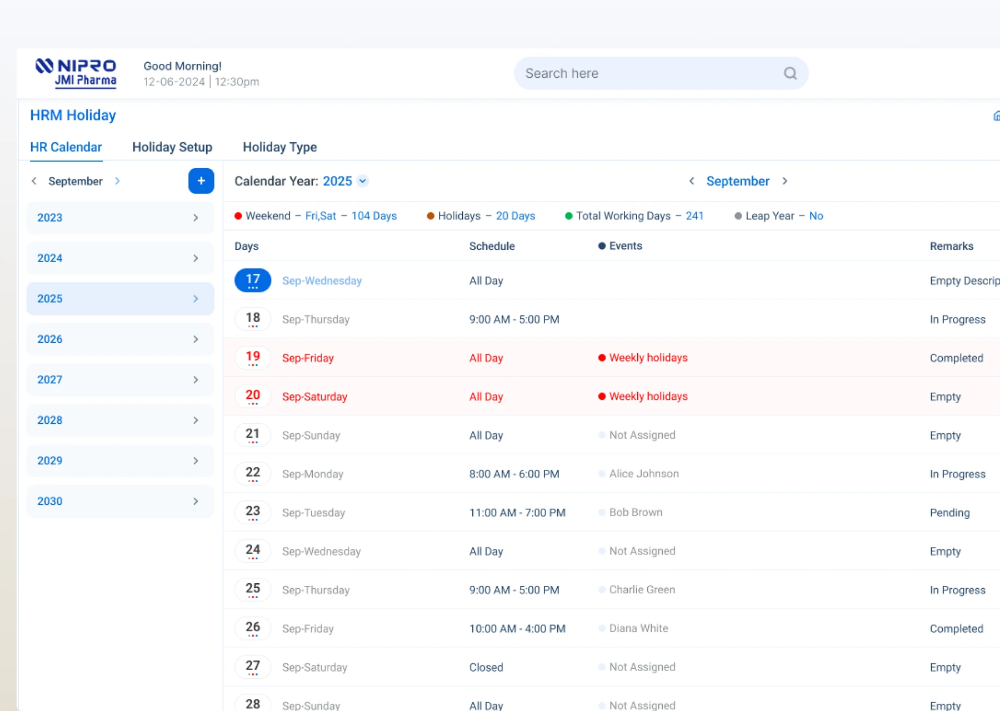

The work is spread across too many systems.
Design response
By organizing around the work itself, the experience reduces context switching and makes the path from request to action clearer.
People operations in one workspace.
01 / Overview
JERP Web HRM brings day-to-day people operations into one connected experience.
JERP HRM brings a broad set of workforce operations into one web experience. The design covers how an organization is structured, how employees and their access are managed, how shifts and time away are planned, and how payroll-related services are handled. The goal is to make these distinct responsibilities feel like parts of one coherent product rather than isolated tools.
02 / The challenge
One product, many HR workflows—without losing clarity or control.
By organizing around the work itself, the experience reduces context switching and makes the path from request to action clearer.
The system groups related capabilities into meaningful modules so employees, managers, and administrators navigate familiar territories while still moving through different workflows.
Reusable patterns, consistent status indicators, and role-aware details give each workflow enough clarity and control without making the product feel repetitive.
03 / The product, in detail
Key screens from the JERP HRM workspace.
A closer look at employee records, scheduling, payroll, and the shared team overview.
JERP HRM / PRODUCT UI




04 / Design thinking process
The design approach moves from understanding the work to shaping a clear operating rhythm.
Identify the people, responsibilities, and recurring tasks represented in the HR modules.
Group related capabilities and make the connections between people, time, and pay easier to understand.
Design task-focused views for administration, scheduling, leave, payroll, and employee services.
Use shared layout and interaction patterns so different HR functions still feel like one product.
Check for clarity, understandability, and appropriate care around sensitive information.
05 / Solution & module design
Three connected areas of people operations built to feel coherent and easy to navigate.
The HRM system is organized around the work rather than around isolated screens. People and access, time and attendance, and payroll and employee services sit in a shared structure that allows teams to move between orchestration, administration, and day-to-day decisions without losing context.
06 / Outcomes & metrics
A quick view of concept scope and illustrative data, not measured impact.
The concept brings key people workflows into a shared workspace. Verified live product or business results were not provided, so these figures describe the interface scope and its illustrative dashboard data.
People / Leave & attendance / Payroll
A starting point for daily work
Illustrative dashboard data
Illustrative dashboard data
Sample figures are for interface demonstration only; they are not measured project outcomes.
07 / Contact
OPEN TO PRODUCT DESIGN COLLABORATIONS
Have a project in mind? Let’s talk.
© ARIFUL ISLAM | 2026
SR. PRODUCT (UI/UX) DESIGNER / DHAKA, BANGLADESH